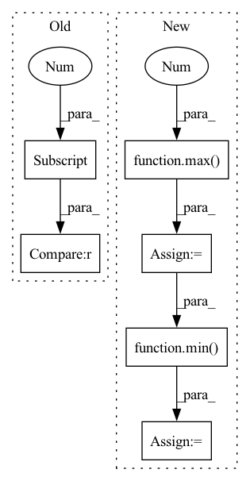

Pattern ID :8099
Before Change
category_name = self.category_mapping[str(category_id)]
// ignore invalid predictions
if bbox[0] > bbox[2] or bbox[1] > bbox[3] or bbox[0] < 0 or bbox[1] < 0 or bbox[2] < 0 or bbox[3] < 0:
logger.warning(f"ignoring invalid prediction with bbox: {bbox}")
continue
if full_shape is not None and (After Change
bbox[0] = max(0, bbox[0])
bbox[1] = max(0, bbox[1])
bbox[2] = max(0, bbox[2])
bbox[3] = max(0 , bbox[3])
// fix out of image box coords
if full_shape is not None:
bbox[0] = min( full_shape[1], bbox[0])
bbox[1] = min(full_shape[0], bbox[1])
bbox[2] = min(full_shape[1], bbox[2])
bbox[3] = min(full_shape[0], bbox[3])
In pattern: SUPERPATTERN
Frequency: 4
Non-data size: 6
Instances Fragment ID: 28691893
Project Name: obss/sahi
Commit Name: 4747b618363263639c50070a94bd07b42b9ee762
Time: 2022-02-05
Author: 34196005+fcakyon@users.noreply.github.com
File Name: sahi/model.py
M Class Name: Yolov5DetectionModel
N Class Name: Yolov5DetectionModel
M Method Name: _create_object_prediction_list_from_original_predictions(3)
N Method Name: _create_object_prediction_list_from_original_predictions(3)
M Parent Class: DetectionModel
N Parent Class: DetectionModel
M File Name: sahi/model.py
N File Name: sahi/model.py
M Start Line: 451
M End Line: 474
N Start Line: 449
N End Line: 477
Before Change
// ignore invalid predictions
if (
bbox[0] > bbox[2]
or bbox[1] > bbox[3]
or bbox[0] < 0
or bbox[1] < 0
or bbox[2] < 0After Change
// fix negative box coords
bbox[0] = max(0, bbox[0])
bbox[1] = max(0, bbox[1])
bbox[2] = max(0 , bbox[2])
bbox[3] = max(0, bbox[3])
// fix out of image box coords
if full_shape is not None:
bbox[0] = min( full_shape[1], bbox[0])
bbox[1] = min(full_shape[0], bbox[1])
bbox[2] = min(full_shape[1], bbox[2])
bbox[3] = min(full_shape[0], bbox[3])
Fragment ID: 28691889
Project Name: obss/sahi
Commit Name: 4747b618363263639c50070a94bd07b42b9ee762
Time: 2022-02-05
Author: 34196005+fcakyon@users.noreply.github.com
File Name: sahi/model.py
M Class Name: MmdetDetectionModel
N Class Name: MmdetDetectionModel
M Method Name: _create_object_prediction_list_from_original_predictions(3)
N Method Name: _create_object_prediction_list_from_original_predictions(3)
M Parent Class: DetectionModel
N Parent Class: DetectionModel
M File Name: sahi/model.py
N File Name: sahi/model.py
M Start Line: 290
M End Line: 338
N Start Line: 290
N End Line: 336
Before Change
classif = classif.sigmoid().t()[labels - 1, :]
// pred_classifs = pred_classifs ** ((sigma - classif + 1e-6) / sigma)
pred_classifs = (pred_classifs * torch.exp(classif / sigma)).clamp_(max=1, min=0)
reg_overlaps[reg_overlaps != reg_overlaps.max(dim=0, keepdim=True)[0] ] = 0.0
pred_classifs[pred_classifs != pred_classifs.max(dim=0, keepdim=True)[0]] = 0.0
for (reg_overlap, pred_classif) in zip(reg_overlaps, pred_classifs):After Change
).clamp_(max=1)
qualities[qualities != qualities.max(dim=0, keepdim=True)[0]] = 0.0
for quality in qualities:
num_pos = max(1 , torch.topk(quality, topk, largest=True)[0].sum().int())
num_pos = min( num_pos, (quality > 0).sum())
pos_mask = torch.topk(quality, num_pos, largest=True)[1]
quality[pos_mask] += 3.0
(best_truth_overlap, best_truth_idx) = qualities.max(dim=0)
pred_t[idx] = best_truth_overlap Fragment ID: 28691952
Project Name: zhanghengdev/mutualguide
Commit Name: e34b6b0002f1571fad0fa9bf00707f377f5fc431
Time: 2022-07-01
Author: zhanghengdev@outlook.com
File Name: utils/box/box_utils.py
M Class Name: AnonimousClass
N Class Name: AnonimousClass
M Method Name: mutual_match(12)
N Method Name: mutual_match(12)
M Parent Class:
N Parent Class:
M File Name: utils/box/box_utils.py
N File Name: utils/box/box_utils.py
M Start Line: 79
M End Line: 99
N Start Line: 97
N End Line: 118